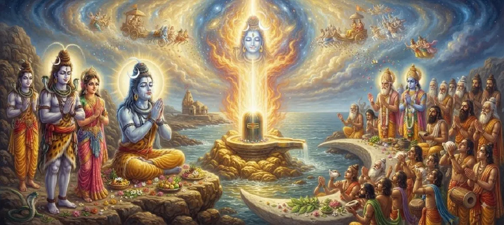

The Origin of Somnath Jyotirlinga
The eighth chapter of the Kotirudra Samhita narrates the legendary and miraculous manifestation of the Somnath Jyotirlinga—the very first among the twelve sacred shrines of light dedicated to Lord Shiva.
It details the story of the Moon God (Soma), his curse by Prajapati Daksha, his intense penance at Prabhas Patan, and how Mahadeva graciously restored him.
This chapter underscores the supreme power of Shiva to conquer death and decay, blessing the universe with eternal radiance.
Chapter 8 Highlights
First Jyotirlinga
Somnath stands as the primordial shrine of light among the twelve Jyotirlingas.
The Curse of Daksha
The Moon God suffered consumption due to an imbalance in marital devotion.
Penance at Prabhas
Soma performed rigorous worship of Mahadeva at the holy site of Prabhas Patan.
Divine Grace Restored
Lord Shiva appeared, cured the Moon, and established His eternal presence.
The Lunar Phases
Shiva blessed Soma with waxing and waning cycles, preserving cosmic order.
Immortal Glory
Worshipping Somnath washes away all sins and grants supreme liberation.
Core Topics in This Chapter
The Marriage of the Moon and Daksha's Curses
Chapter 8 begins by recounting how Prajapati Daksha gave his twenty-seven daughters in marriage to the Moon God (Soma).
Although Soma was married to all sisters equally, he favored Rohini above the rest, prompting the other wives to complain to their father Daksha.
The Decline and Suffering of Soma
Angered by this partiality, Daksha cursed the Moon God to suffer from consumption (Kshaya roga), causing his body and radiance to waste away daily.
As Soma's light diminished, plants withered, life on earth faltered, and panic spread across the heavens until the gods intervened.
Arrival at Prabhas Kshetra and Penance
Following Brahma's counsel, Soma traveled to the sacred Prabhas Kshetra along with Rohini to perform severe penance dedicated to Lord Shiva.
For thousands of years, he worshipped the Mahamrityunjaya mantra with absolute devotion, overcoming his mortal despair.
The Miraculous Appearance of Lord Shiva
Deeply moved by Soma's sincere repentance and steadfast devotion, Lord Shiva and Goddess Parvati manifested before him in all Their divine splendor.
Mahadeva assured the distressed Moon God that no curse could destroy a true devotee who sought refuge at His lotus feet.
The Boons Granted to the Moon God
Shiva relieved Soma of his disease, blessing him to wax during the bright fortnight (Shukla Paksha) and wane during the dark fortnight (Krishna Paksha).
This divine compromise honored Daksha's curse while restoring life, light, and balance to the entire cosmos.
Establishment of the Somnath Jyotirlinga
At the earnest request of Brahma and the assembled gods, Lord Shiva established His permanent presence there in the form of the Somnath Jyotirlinga.
It became the first of the twelve Jyotirlingas, destined to liberate all beings who worship it with faith and devotion.
Transition to Chapter 9
Having chronicled the miraculous origin of Somnath, the narrative smoothly guides the reader into Chapter 9, which explores the glory of the Mallikarjuna Jyotirlinga.
This continues the sacred pilgrimage through the twelve holy manifestations of Mahadeva across Bharat.
Key Teachings of Chapter 8
Power Over Curses
Shiva's grace can nullify even the harshest karmic decrees and curses.
Restoration of Light
Divine intervention saves the cosmos from darkness and despair.
Absolute Refuge
Sincere penance at holy sites like Prabhas yields miraculous redemption.
Primordial Light
Somnath shines eternally as the first and foremost Jyotirlinga.
Cosmic Balance
The lunar phases reflect the harmonious resolution granted by Mahadeva.
Guaranteed Salvation
Worshipping Somnath purifies the soul and grants ultimate liberation.
Spiritual Reflection
The legend of Somnath Jyotirlinga reminds us that no matter how severe our trials or karmic suffering may be, turning to Lord Shiva with sincere repentance and devotion can entirely reverse our fate. Just as Mahadeva restored the waning Moon and blessed the cosmos with light, He dispels the darkness of ignorance and decay from the hearts of His devotees.
Living the Message of Chapter 8
Approach life's setbacks with spiritual resilience, knowing that divine grace can transform despair into renewed radiance.
Dedicate time for regular prayer and meditation, seeking the light of Mahadeva to clear inner darkness.
Honor the sacred geography of Bharat by meditating upon the twelve Jyotirlingas, starting with the glorious Somnath shrine.
Key Spiritual Concepts
A radiant, infinite pillar of divine light manifesting the presence of Lord Shiva.
The Moon God, whose worship of Shiva established the first shrine.
The sacred geographical site where Soma performed penance and Somnath appeared.
The disease of consumption and wasting inflicted by Daksha's curse.
The bright fortnight of waxing moon blessed by Shiva's grace.
Ultimate spiritual liberation attained through devotion at holy shrines.
Chapter Summary
Kotirudra Samhita Chapter 8 narrates the captivating legend of the Somnath Jyotirlinga, detailing the Moon God's curse, his intense penance at Prabhas Patan, and Lord Shiva's miraculous manifestation. By curing Soma and establishing the primordial Jyotirlinga, Mahadeva preserved cosmic order and provided an eternal sanctuary of grace, seamlessly paving the way for the exploration of Mallikarjuna in Chapter 9.
Frequently Asked Questions
1. What is the main subject of Kotirudra Samhita Chapter 8?
Chapter 8 details the sacred origin, legend, and manifestation of the Somnath Jyotirlinga, the very first among the twelve divine Jyotirlingas of Lord Shiva.
2. Why did the Moon God (Soma) worship Lord Shiva?
The Moon God worshipped Lord Shiva at Prabhas Patan to be liberated from the debilitating curse of consumption (Kshaya roga) inflicted by Prajapati Daksha.
3. What was the result of Soma's penance?
Pleased by his intense devotion, Lord Shiva cured the Moon, blessed him with the waxing and waning lunar phases, and manifested as Somnath.
4. Why is Somnath considered the first Jyotirlinga?
Somnath is revered as the first Jyotirlinga because it was here that the pillar of infinite light first manifested to restore cosmic balance and save the Moon.
5. How does Chapter 8 connect to the surrounding chapters?
Chapter 8 follows the greatness of Nandikeshvara from Chapter 7 and directly precedes Chapter 9, which explores the glory of the Mallikarjuna Jyotirlinga.
6. What is the core spiritual takeaway of this chapter?
Sincere refuge in Lord Shiva can reverse even the most severe karmic curses, restoring health, radiance, and divine grace to the devotee.
“Manifesting as the primordial Somnath Jyotirlinga, Lord Shiva restored light to the cosmos and eternal grace to His devoted worshippers.”
Continue Through Kotirudra Samhita
Chapter 8 explores the origin of Somnath Jyotirlinga. Continue to Chapter 9, The Glory of Mallikarjuna Jyotirlinga.